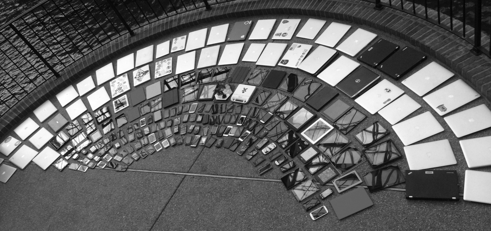
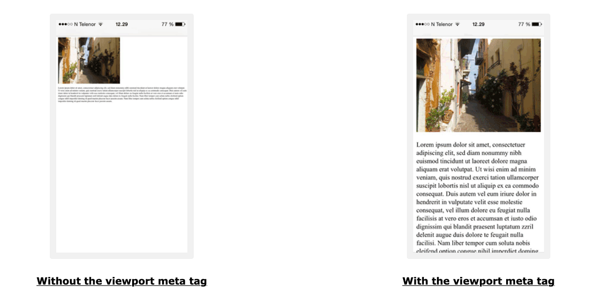

This week we'll learn how to make websites that look great on any device - from mobile phones to large desktop monitors. We'll explore the mobile-first approach and essential responsive design techniques.
This session
- Where you should be with Silverlake
- What responsive web design is, and why mobile first
- The viewport meta tag
- Media queries
- Fluid layouts, flexible units and responsive images
- Breakpoints, and building a mobile-first layout
- Testing on real and simulated devices
- Break
- Figma design work and one-to-one feedback
Silverlake Task - Where You Should Aim to Be
There's quite a bit to do in these last few weeks so to keep things on track I've put together a quick diagram on where I think you need to be. This week you should be focusing on wireframing & site design.
Competitor analysis of 3 other websites
Mindmaps, decide on theme, moodboards, decide on pages, structure diagram
Sketch out how each of your 4 pages will look on mobile, tablet and desktop (12 sketches in all)
Use Figma to create finished designs. Export graphics out.
The easy bit :-P Build your pages!
What is Responsive Web Design?

Responsive Web Design (RWD) is an approach to web design that makes web pages render well on a variety of devices and window sizes. Rather than creating separate websites for different devices, responsive design uses flexible layouts, images, and CSS media queries to adapt the presentation.
The Three Pillars of Responsive Design
- Fluid Grids - Using relative units (%, em, rem, vw) instead of fixed pixels
- Flexible Images - Images that scale within their containing elements
- Media Queries - CSS rules that apply styles based on device characteristics
The term "Responsive Web Design" was coined by Ethan Marcotte in 2010. Before this, developers often created completely separate mobile websites (m.example.com) or relied on user-agent detection to serve different content.
Why Mobile-First Design?
Mobile-first is a design strategy where you start by designing for the smallest screen first, then progressively enhance the design for larger screens. This approach has become the industry standard for several important reasons:
Benefits of Mobile-First
- Over 60% of web traffic now comes from mobile devices
- Forces prioritisation - Limited space means you focus on essential content first
- Better performance - Mobile styles are simpler and load faster
- Progressive enhancement - You add complexity as screen size increases
- Google's mobile-first indexing - Google primarily uses mobile version for ranking
To implement mobile-first design, we'll use a key technique called media queries. But before we dive into how to apply mobile-first principles with media queries, let's first understand two essential tools: the viewport meta tag and CSS media queries themselves.
The Viewport Meta Tag
Before any responsive CSS will work correctly, you
must include the viewport meta tag in your HTML
<head>:
<meta name="viewport" content="width=device-width, initial-scale=1.0">Why is this essential?
Without this tag, mobile browsers will render your page at a typical desktop width (usually 980px) and then shrink it down to fit the screen. This makes text tiny and unreadable, and your media queries won't work as expected.

Without the viewport meta tag, mobile browsers render pages at desktop width and scale them down, making text unreadable
What each part means:
-
width=device-width- Sets the viewport width to match the device's screen width -
initial-scale=1.0- Sets the initial zoom level to 100% (no zoom)
CSS Media Queries
Media queries are the foundation of responsive design. They allow you to apply CSS rules only when certain conditions are met, such as screen width, height, orientation, or even print vs screen.
Basic Syntax
@media (condition) {
/* CSS rules go here */
}Common Media Query Examples
Minimum Width (Mobile-First)
/* Styles for screens 768px and wider */
@media (min-width: 768px) {
.sidebar {
display: block;
width: 250px;
}
}Screen Orientation
/* Styles for landscape orientation */
@media (orientation: landscape) {
.hero-image {
height: 50vh;
}
}
/* Styles for portrait orientation */
@media (orientation: portrait) {
.hero-image {
height: 30vh;
}
}Combining Conditions
/* Screens between 768px and 1024px */
@media (min-width: 768px) and (max-width: 1024px) {
.container {
padding: 20px;
}
}
/* Tablets in landscape OR desktops */
@media (min-width: 768px) and (orientation: landscape),
(min-width: 1024px) {
.nav {
display: flex;
}
}Exercise 1 - Writing your first media queries
Now it's time to put media queries into practice! Follow the instructions below to complete this exercise.
📂 Getting Started:
- Locate the week10-rwd-exercises.zip file in today's tutorial folder
- Unzip the file to extract the exercise files
- Open exercise1-media-query-intro.html in your browser
- Open the corresponding CSS file in your code editor
Tip: Read through the HTML and CSS comments carefully - they'll guide you through creating your first responsive layout using media queries!
Mobile-First vs Desktop-First
Now that you understand media queries, let's look at how we apply them differently depending on whether we're using a mobile-first or desktop-first approach.
The key difference is in how you write your CSS media queries:
Desktop-First Approach (NOT recommended)
/* Base styles for desktop */
.container {
width: 1200px;
display: flex;
}
/* Then override for smaller screens */
@media (max-width: 768px) {
.container {
width: 100%;
display: block;
}
}Mobile-First Approach (Recommended)
/* Base styles for mobile */
.container {
width: 100%;
display: block;
}
/* Then enhance for larger screens */
@media (min-width: 768px) {
.container {
width: 750px;
display: flex;
}
}
Notice the difference: mobile-first uses
min-width (styles apply when screen is
at least this wide), while desktop-first uses
max-width (styles apply when screen is
at most this wide).
Why This Matters
With mobile-first, your base CSS is simpler and loads faster on mobile devices. You only add the complexity needed for larger screens when the device can handle it. This approach aligns perfectly with progressive enhancement and improves performance.
Fluid Layouts and Flexible Units
A key principle of responsive design is using relative units instead of fixed pixel values. This allows elements to scale proportionally with the viewport.
CSS Units for Responsive Design
| Unit | Description | Best Used For |
|---|---|---|
%
|
Percentage of parent element | Widths, margins, padding |
em
|
Relative to parent's font size | Typography, component spacing |
rem
|
Relative to root (html) font size | Font sizes, consistent spacing |
vw
|
1% of viewport width | Full-width elements, hero sections |
vh
|
1% of viewport height | Full-height sections, modals |
Example: Fluid Container
.container {
width: 90%; /* 90% of parent width */
max-width: 1200px; /* But never wider than 1200px */
margin: 0 auto; /* Centered horizontally */
padding: 1rem; /* Consistent padding based on root font */
}
.hero {
min-height: 50vh; /* At least half the viewport height */
padding: 2rem 5%; /* Responsive padding */
}
h1 {
font-size: clamp(1.5rem, 4vw, 3rem); /* Responsive font size */
}The clamp() Function
clamp(min, preferred, max) is incredibly useful for
responsive typography. It sets a preferred value that scales with
the viewport, but won't go below the minimum or above the maximum.
/* Font will scale between 16px and 24px based on viewport */
font-size: clamp(1rem, 2.5vw, 1.5rem);Responsive Images
Images need special consideration in responsive design. A large image that looks great on desktop can slow down mobile devices and waste bandwidth.
Basic Responsive Image
img {
max-width: 100%; /* Never wider than container */
height: auto; /* Maintain aspect ratio */
display: block; /* Remove inline spacing */
}This simple CSS rule should be applied to all images on your site.
Further reading, not required
HTML can also serve different image files to different
screens with the <picture> element and the
srcset attribute. You don't need them for
Silverlake; one well-sized image with
max-width: 100% is fine. If you're curious,
MDN's guide to responsive images
covers both.
Common Breakpoints
Breakpoints are the viewport widths where your layout changes. While there's no universal standard, here are commonly used breakpoints:
Typical Mobile-First Breakpoints
/* Base styles - Mobile (0px and up) */
/* No media query needed - this is your default */
/* Small tablets and large phones (576px and up) */
@media (min-width: 576px) {
/* Styles for larger phones */
}
/* Tablets (768px and up) */
@media (min-width: 768px) {
/* Tablet styles */
}
/* Laptops and small desktops (992px and up) */
@media (min-width: 992px) {
/* Desktop styles */
}
/* Large desktops (1200px and up) */
@media (min-width: 1200px) {
/* Large screen styles */
}
/* Extra large screens (1400px and up) */
@media (min-width: 1400px) {
/* Extra large screen styles */
}Important: Content-Based Breakpoints
It is extremely rare to use all of the breakpoints listed above. You should only add a breakpoint when your content is struggling to look good. Don't just use these standard breakpoints blindly! The best practice is to add breakpoints where your content needs them. Resize your browser and add a breakpoint when the layout starts to look broken or awkward.
Building a Mobile-First Layout
Let's look at a simple example showing how mobile-first CSS works in practice. We'll create a basic page with a header and content area that adapts to different screen sizes.
The HTML
<header class="site-header">
<h1>My Website</h1>
<nav>
<a href="#">Home</a>
<a href="#">About</a>
<a href="#">Contact</a>
</nav>
</header>
<main class="content">
<h2>Welcome</h2>
<p>This is a simple responsive layout.</p>
</main>The Mobile-First CSS
/* Mobile styles (base - no media query needed) */
.site-header {
background: #333;
color: white;
padding: 1rem;
text-align: center;
}
.site-header h1 {
font-size: 1.5rem;
margin-bottom: 1rem;
}
.site-header nav a {
display: block;
color: white;
padding: 0.5rem;
text-decoration: none;
}
.content {
padding: 1rem;
}
.content h2 {
font-size: 1.5rem;
}
/* Tablet styles (768px and up) */
@media (min-width: 768px) {
.site-header {
display: flex;
justify-content: space-between;
align-items: center;
text-align: left;
}
.site-header h1 {
margin-bottom: 0;
}
.site-header nav a {
display: inline-block;
margin-left: 1rem;
}
.content {
max-width: 800px;
margin: 0 auto;
padding: 2rem;
}
.content h2 {
font-size: 2rem;
}
}
/* Desktop styles (1024px and up) */
@media (min-width: 1024px) {
.content {
max-width: 1000px;
padding: 3rem;
}
.content h2 {
font-size: 2.5rem;
}
}Key Takeaways
- Base styles are for mobile - no media query needed
- Mobile navigation stacks vertically, desktop shows horizontally
- Content width is constrained on larger screens for readability
- Spacing and font sizes increase as screen size grows
- Flexbox is used on tablet and up for side-by-side layouts
💡 View the Completed Example
Want to see this example in action? Open mobile-first-example.html from this week's exercise folder in your browser. Resize your browser window to see how the layout adapts at different screen sizes!
Exercise 2 - Build a Responsive Product Page
Now it's time to put everything you've learned into practice! In this exercise, you'll make a product page fully responsive by completing three challenges.
What You'll Build:
- Challenge 1: Product cards that stack on mobile, display 2 per row on tablet, and 3 per row on desktop
- Challenge 2: A newsletter form that stacks on mobile but sits side-by-side on larger screens
- Challenge 3: Feature boxes that stack on mobile but display in a row on desktop
📂 Getting Started:
- Open the following files in the exercise folder you unzipped before in VS Code
- Open exercise2-starter.html in your browser
- Open exercise2-starter.css in VS Code
Instructions:
- Read the comments in both the HTML and CSS files carefully - they explain what each challenge requires
- All your work will be done in the CSS file in the "MEDIA QUERIES" section
- Start with Challenge 1 (product cards), then move to Challenge 2 (newsletter), then Challenge 3 (features)
- Test your work by resizing your browser window to see the layout change at different screen sizes
- Use the helpful hints provided in the CSS comments if you get stuck
💡 Tips for Success:
- Remember the mobile-first approach - the base styles are already mobile-friendly!
-
Use
display: flexandflex-wrap: wrapto create flexible layouts -
The
gapproperty is perfect for spacing between flex items -
Use
calc()to calculate widths accounting for gaps (e.g.,calc(50% - 10px)) - Test at each breakpoint: 768px (tablet) and 1024px (desktop)
Time to complete: 20-30 minutes
Difficulty: Intermediate
Testing Your Responsive Design
Testing is crucial to ensure your responsive design works across all devices. Here are the essential testing methods:
1. Browser Developer Tools
All modern browsers have built-in responsive design testing tools:
- Chrome/Edge: Press F12, then click the device toggle icon (or Ctrl+Shift+M)
- Firefox: Press F12, then Ctrl+Shift+M for Responsive Design Mode
- Safari: Enable Developer menu in Preferences, then Develop > Enter Responsive Design Mode
Testing Tip
Don't just test at preset device sizes! Drag the browser window slowly from narrow to wide and watch how your layout responds. Look for awkward line breaks, overlapping elements, or content that becomes too stretched or squashed.
2. Real Device Testing
Browser simulators are useful, but nothing beats testing on real devices. If possible, test on:
- An actual smartphone (both iOS and Android if possible)
- A tablet
- Different desktop screen sizes
3. Online Testing Tools
- Responsive Design Checker - Test your site at various screen sizes
- BrowserStack - Test on real devices in the cloud (free trial available)
- Google Mobile-Friendly Test - Check if Google considers your page mobile-friendly
4. Common Issues to Check For
Watch out for these problems:
- Horizontal scrolling on mobile (usually means something is too wide)
- Text that's too small to read without zooming
- Buttons or links too close together (hard to tap on mobile)
- Images that overflow their containers
- Fixed-width elements that don't scale
- Navigation that doesn't work on touch screens
Break
Halfway
After the break: design work in Figma with one-to-one feedback.
Figma design work and feedback
Focus for Today's Session
Now that you've learned about responsive design principles, continue working on your Silverlake Figma designs with mobile-first thinking in mind. I'll be available for one-to-one feedback sessions to help refine your designs.
What to Work On:
- Complete all three responsive layouts - Ensure you have finished designs for mobile (375px), tablet (768px), and desktop (1440px)
- Review your mobile design first - This should be the simplest, most essential version of your content
- Check design consistency - Colours, fonts, spacing, and components should be consistent across all three layouts
- Consider how layouts adapt - Think about how your design transitions from mobile → tablet → desktop
- Export assets - Start exporting logos, icons, and images ready for implementation
Before Next Week:
- Finalize all three Figma designs (mobile, tablet, desktop)
- Export all necessary graphics and assets
- Take screenshots of your designs for your portfolio
- Be ready to start building your website with HTML and CSS
Additional Resources
Documentation
- MDN: Responsive Design - Comprehensive guide from Mozilla
- Google Web.dev: Responsive Web Design Basics - Google's guide to RWD
- CSS-Tricks: Complete Guide to Media Queries - In-depth media query reference